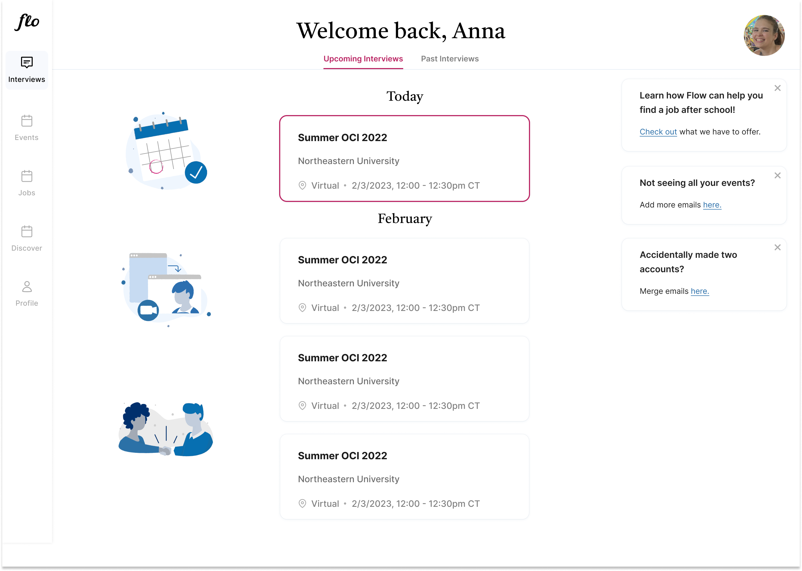
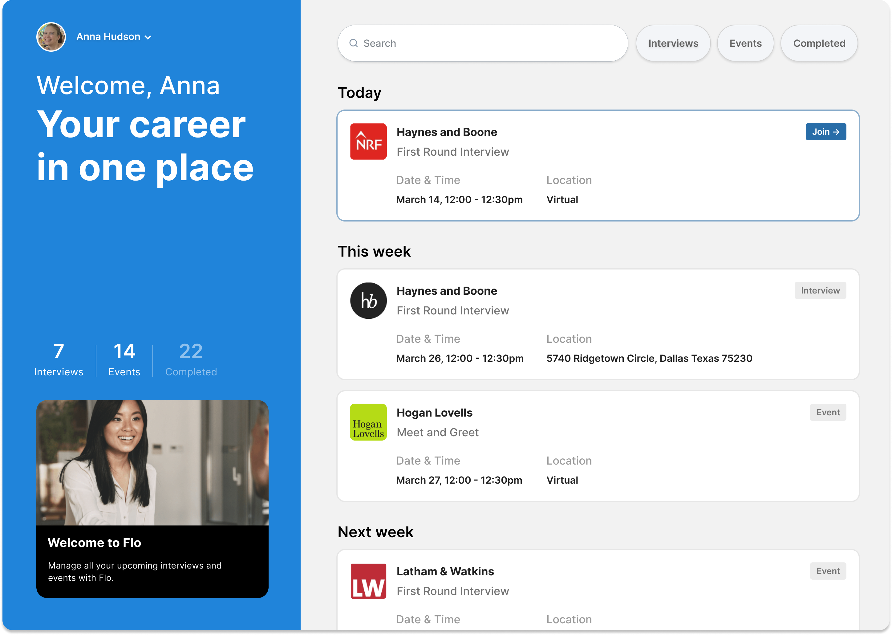
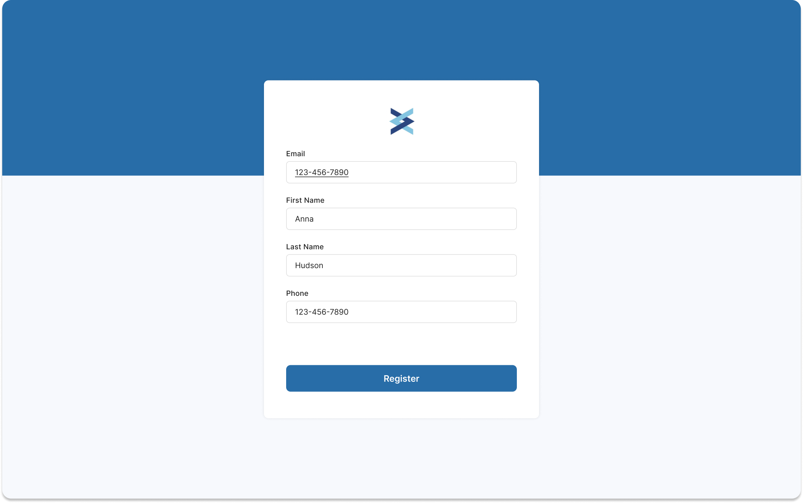
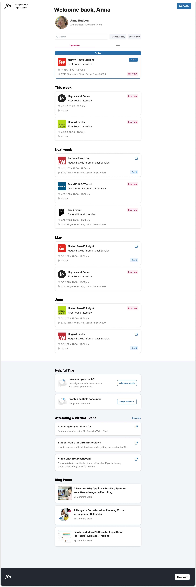

$1M
Revenue contribution at launch
Am100
Law firms using the portal
0→1
Built candidate product from scratch
Flo Recruit had no candidate-facing product. I designed it from scratch — the dashboard, onboarding flow, and UI system that launched across top U.S. law firms and contributed to $1M in new revenue.
Flo Recruit was already the leading platform for law firms to manage their recruiting pipelines — but the candidate side of that equation was an afterthought. Law students receiving interview invitations had no dedicated product experience. They were navigating a clunky, firm-facing interface that wasn't designed for them.
I was brought on contract to fix that. The brief: design a candidate portal from the ground up, ship it in four months, and make it good enough to close enterprise deals with Am Law 100 firms.
"The candidate experience is what the law firms are actually selling to their recruits. If it's broken, we lose the deal."
There was no existing candidate design to build on — just a set of firm-side admin tools, an existing design system, and a tight timeline. I started by auditing how candidates were currently interacting with the platform: email invitations, manual scheduling, no consolidated view of upcoming interviews or events. Drop-off was high, and confusion was the norm.
The core jobs to be done were clear: candidates needed to see what was coming, understand what was expected of them, and join their interviews without friction.
Before landing on the final direction, I explored two distinct approaches to the dashboard. The first was a simpler list-based view — minimal chrome, focused purely on the schedule. The second pushed further: a richer portal with a hero onboarding moment, progress stats, and a more editorial layout. The second direction won — it gave candidates a sense of ownership over their recruiting process, not just a calendar.


Two dashboard directions explored before landing on the final design
The onboarding had to work for a very specific user: a law student receiving a recruiting invitation from a firm they desperately want to impress. The bar for confusion was zero — any friction and they'd email the firm directly, creating support burden and a bad first impression.
I designed a four-step flow: confirmation email → magic link verification → account registration → portal access. The key decisions were keeping each screen to a single action, using the firm's context (event name, firm logo) to ground the candidate in why they were there, and writing microcopy that felt calm and professional rather than generic SaaS.

Onboarding flow — email confirmation & account registration
Candidates often had multiple email addresses across personal, school, and firm-forwarded accounts. The onboarding had to handle email linking and account merging gracefully — otherwise the same candidate would appear as multiple users in the firm's pipeline.
The centerpiece of the portal was a unified timeline view — every upcoming interview and event, across every firm the candidate was engaged with, in a single chronological feed. No more piecing together information from separate email threads.
Each card showed the firm name and logo, interview type, date and time, location (virtual or in-person), and a "Join →" CTA when the interview was live. Interview cards were visually distinct from event cards — pink tags for interviews, blue for events — so candidates could parse their week at a glance.

Candidate dashboard — upcoming interviews and events, grouped chronologically
For the desktop portal, I designed a two-panel layout: a persistent left sidebar with the candidate's profile, LinkedIn, and a progress tracker showing interview and event completion, alongside a main content area with a daily schedule, firm-specific tips, and a blog post feed.
The progress tracker ("5/7 Interviews · 3/14 Events") with a color-coded progress bar was a deliberate piece of motivation design — legal recruiting is stressful, and giving candidates a sense of momentum mattered.
Career Hub — desktop dashboard with schedule, progress tracker, and daily tips
The candidate portal shipped on schedule and was deployed across Am Law 100 clients at launch. The improved candidate experience became a direct selling point in enterprise deals — firms used it to demonstrate their recruiting infrastructure to top candidates.